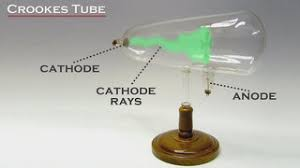

1.Mystery:
- now had its first glimpse at a subatomic particle. Science would be forever changed. Any new model of the atom must contain subatomic particles Thomson called these particles corpuscles.
- while he was correct about the existence of the particles, the name he gave them changed: These negatively charged particles are now known as electrons. In 1890, Thomson married one of his students, Rose Elisabeth Paget. They had a son and a daughter. The son, Sir George Paget Thomson, received the Nobel Prize in Physics in 1937.
2.Atomic theory:

Atomic theory is the scientific theory that matter is composed of particles called atoms. Atomic theory traces its origins to an ancient philosophical tradition known as atomism. According to this idea, if one were to take a lump of matter and cut it into ever smaller pieces, one would eventually reach a point where the pieces could not be further cut into anything smaller. Ancient Greek philosophers called these hypothetical ultimate particles of matter atomos, a word which meant "uncut".
To know more about "Atomic theory" clich on the below link
3.Discovery of atomic model:
- Thomson's discovery of the electron completely changed the way people viewed atoms. Up until the end of the 19th century, atoms were thought to be tiny solid spheres.
- In 1903, Thomson proposed a model of the atom consisting of positive and negative charges, present in equal amounts so that an atom would be electrically neutral. He proposed the atom was a sphere, but the positive and negative charges were embedded within it.
- Thomson's model came to be called the "plum pudding model" or "chocolate chip cookie model". Modern scientists understand atoms consist of a nucleus of positively-charged protons and neutral neutrons,< with negatively-charged electrons orbiting the nucleus. Yet, Thomson's model is important because it introduced the notion that an atom consisted of charged particles.